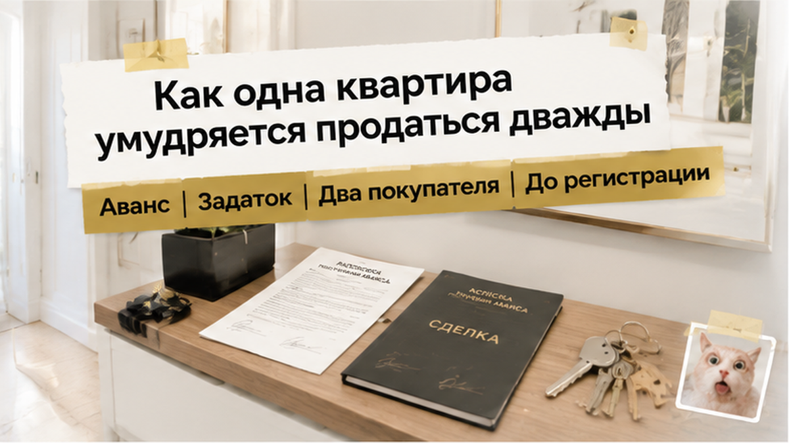
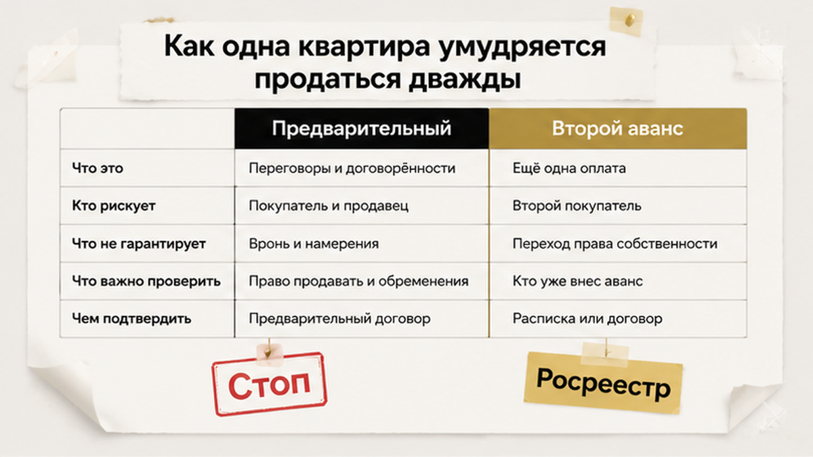
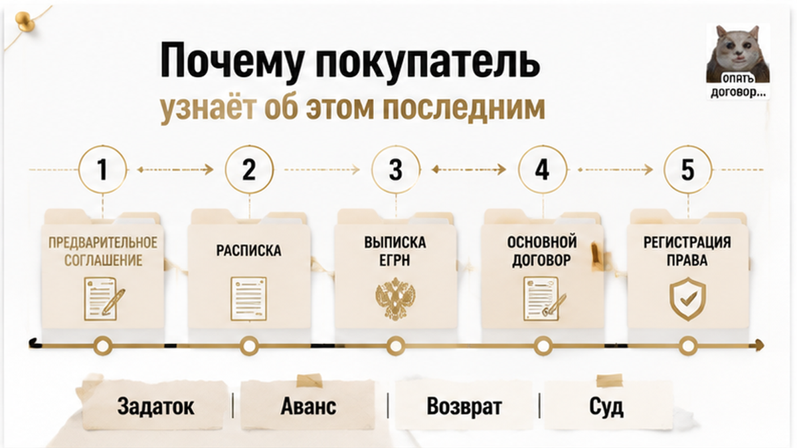
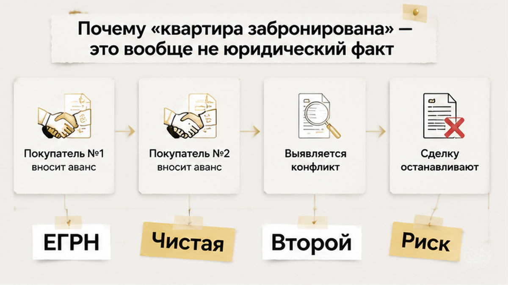
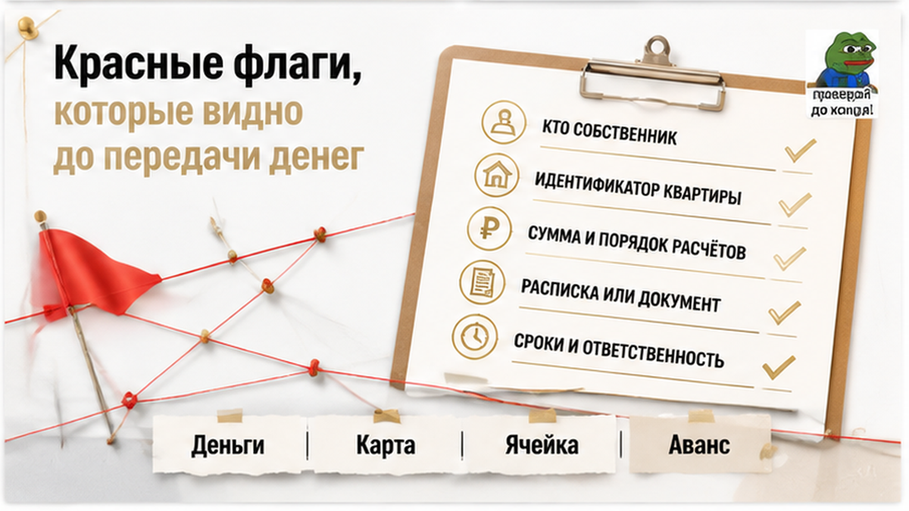
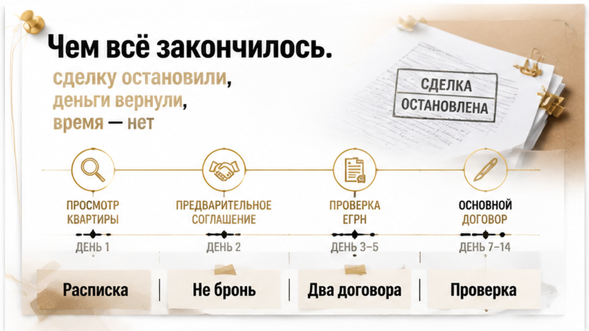

Одна квартира. Два аванса. Два покупателя, и каждый уже мысленно двигал диван к окну.
История тюменская, свежая и до обидного простая. Продавец выставил квартиру, нашёл покупателя, взял с него аванс и написал расписку — всё как у людей. А спустя несколько дней взял аванс ещё раз, с другого человека: тот дал больше и вопросов задавал меньше. Дальше сделка поехала по двум веткам сразу — два договора, два ожидания, два разговора с банком и один-единственный объект в Росреестре. Остановила это не совесть продавца и не звёзды, а обычная проверка: кто-то догадался посмотреть документы раньше, чем деньги ушли дальше аванса. Вот на этом «раньше» я и хочу задержаться, потому что слово «остановили» звучит буднично, а за ним стоит человек, который не потерял свои деньги.
Святослав Шакин, The Риэлтор, Тюмень. Разборы сделок до аванса — в мессенджерах, пока история ещё не стала вашей.
Telegram: @Tyumen_Rieltor · MAX: написать в MAX


Люди обычно уверены, что аванс — это бронь. Заплатил — квартира твоя, флажок воткнут, остальные идут мимо.
Нет. Аванс — это деньги и бумага. Всё.
Он нигде не регистрируется. Не уходит в Росреестр, не появляется в выписке, не всплывает в базе, куда мог бы заглянуть второй покупатель. Единственное место, где живёт факт вашего аванса, — расписка у вас на руках и совесть продавца. Совесть, как выяснилось, в реестрах не отображается.
Поэтому продавец физически может взять деньги хоть у троих. Ему за это не прилетит автоматически: система не заметит, банк не заметит, соседи тем более. Заметит только тот, кто полезет в документы и начнёт задавать вопросы, которые в переписке выглядят занудно.
А теперь как это выглядит с той стороны, где сидит покупатель.
Вы месяц смотрели варианты. Отпросились с работы, объехали шесть квартир, в двух пахло сыростью, в одной сосед сверху репетировал на барабанах. И вот — та самая: двор нормальный, школа рядом, цена почти в бюджет. Продавец приятный, говорит быстро, торопит мягко: «есть ещё желающие, давайте закрепим».
Вы закрепляете. Отдаёте аванс, получаете расписку, выдыхаете и начинаете жить в этой квартире мысленно. Смотрите шторы. Спорите про кухню.
А продавец в это время закрепляется с кем-то ещё.

Самое паршивое в двойном авансе — не жадность продавца. Жадность хотя бы понятна. Паршиво то, как поздно всплывает правда.
Аванс никого не уведомляет. Вы не получите смс «по вашему объекту принят второй платёж». Продавец не обязан рассказывать вам, кто ещё приходил и с какими деньгами. Более того, ему выгодно молчать: пока оба покупателя считают себя единственными, оба ведут себя удобно — не торгуются, не тянут, не устраивают проверок.
Дальше начинается то, что я называю «тишина перед авансом номер два». Продавец перестаёт отвечать сразу. Появляются формулировки: «нужно посоветоваться с супругой», «давайте на следующей неделе», «документы у мамы, она в санатории». Каждая из этих фраз по отдельности — норма. Три подряд — уже симптом.
И тут важная штука, которую я повторяю на каждой второй консультации.
Проблема не в том, что вас обманывают. Проблема в том, что вы узнаёте об обмане в момент, когда деньги уже не аванс, а полная стоимость на аккредитиве. Между «дал сто тысяч» и «дал всю квартиру» — обычно две-три недели. Всё, что вы успеете проверить в эти недели, стоит ровно столько, сколько вы могли потерять.
В тюменской истории повезло, что до второй стадии не дошло. Проверка документов началась до перевода основной суммы — и вся конструкция посыпалась ещё на подступах. Продавцу пришлось объясняться, покупателям — считать нервы, а не миллионы.
Могло быть иначе. У меня в практике был случай, когда о параллельном покупателе узнали в день сделки, прямо в банке. Люди стояли в переговорной с готовым пакетом документов, а квартира к тому моменту уже уехала к другим. Разворачивались молча. Хуже всего смотрелся не продавец — хуже всего смотрелся риэлтор, который «ничего не проверял, потому что человек показался нормальным».
Нормальные люди тоже берут два аванса. Особенно когда им срочно нужны деньги, а квартира — единственный актив.
Тут я на минуту стану скучным. Потерпите, эта минута обычно стоит дороже всей остальной статьи.
Аванс — это просто предоплата. Сделка не состоялась — аванс возвращается. Без штрафов, без двойных размеров, без последствий для того, кто передумал. Именно поэтому продавцы его так любят: обязательств почти ноль, а покупатель уже эмоционально «купил» квартиру и морально с ней не расстанется.
Задаток — это статьи 380 и 381 Гражданского кодекса. Виноват продавец — возвращает в двойном размере. Виноват покупатель — деньги остаются у продавца. Здесь уже больно обеим сторонам, и поэтому продавец, который собирается играть двумя руками, задаток подписывать не хочет. Он будет говорить «да это одно и то же», «да мы же взрослые люди», «да зачем нам эти формальности».
Не одно и то же. Разница в том, кто заплатит, когда всё развалится.
Обеспечительный платёж — третий вариант, где последствия прописываются в самом договоре: за что удерживается, при каких условиях возвращается, в какой срок. Инструмент рабочий, но он работает только тогда, когда условия действительно написаны, а не подразумеваются.
И самая частая беда рынка: в бумажке написано «задаток», а по содержанию — обычный аванс. Или наоборот. Суд смотрит не на заголовок расписки, а на то, что в ней согласовано: предмет, сроки, ответственность сторон. Слово «задаток», написанное шариковой ручкой поверх пустоты, само по себе не делает деньги защищёнными.

Фраза «мы сняли объект с продажи» звучит успокаивающе. Юридически она не значит ничего.
Убрать объявление с площадки — это действие маркетинговое, а не обязывающее. Перестать показывать квартиру — тоже. Продавец в любой момент может показать её кому угодно, взять предоплату у кого угодно и объяснить это тем, что «вы же долго тянули с одобрением».
Единственное, что реально связывает продавца, — это подписанный договор с внятными условиями: кто, что, когда, за сколько, и что происходит, если одна из сторон выходит из сделки. Всё остальное — вежливость.
Я много раз видел, как покупатель месяц живёт в уверенности, что квартира его, потому что риэлтор продавца сказал по телефону: «Не переживайте, мы больше никого не водим». А потом выясняется, что водили. И не просто водили — брали деньги.

Ни один из них не доказывает, что перед вами двойная продажа. Но когда их два-три сразу — я торможу сделку и объясняю клиенту, почему мы сегодня никуда не платим.
Отдельно скажу про эмоции, потому что они здесь работают против покупателя сильнее любого юридического пробела.
Когда человек полгода смотрит квартиры, устал, наконец нашёл ту самую — с балконом, с нормальными соседями, с окнами во двор, — он перестаёт быть переговорщиком. Он становится человеком, который боится потерять. И вот с этим человеком очень удобно работать тому, кто собирается взять предоплату второй раз.
Продавец не обязательно злодей с планом. Часто это просто человек, у которого горит своя встречка, и он решает: возьму у обоих, кто первый соберёт деньги — тому и продам, второму верну. И искренне не считает это обманом. Ровно до того момента, когда возвращать оказывается нечем, потому что деньги уже ушли в аванс за его собственную будущую квартиру.
Честный вопрос, без правильного ответа.
Вам говорят: «Квартира ваша, но аванс нужен сегодня наличными и под расписку от руки. К нотариусу не поедем, времени нет, вечером второй смотрит».
Вы платите — потому что квартира действительно хорошая и другой такой не будет? Или не платите — и, возможно, реально теряете объект, который искали полгода?
Напишите в комментариях, что бы сделали вы. Мне правда интересно, где у людей проходит эта граница — потому что на моей практике примерно половина рынка платит, и половина из тех, кто заплатил, потом рассказывает про это как про самый дорогой урок в жизни.
Если вы сейчас на этапе «вот-вот внесём аванс» — напишите до передачи денег, а не после.

Развязка вышла скучной. Именно поэтому она и хорошая.
Второй аванс всплыл на проверке — до того, как деньги ушли в банковскую ячейку и до того, как кто-то поехал подписывать основной договор. Покупатель отказался идти дальше. Продавец аванс вернул: спорить, когда на руках у двух разных людей лежат две бумаги на одну и ту же квартиру, — занятие для очень уверенных в себе людей.
То есть суда не было. Взыскания не было. Никто не потерял первоначальный взнос, который копил четыре года.
Потеряли другое. Две недели на «нашу квартиру». Отложенный банковский одобрёж, который надо продлевать. Проданную под этот переезд свою однушку — и вот это уже больно, потому что сроки поехали не у продавца, а у покупателя. Плюс тот сорт усталости, после которого люди говорят «да ну её, эту вторичку» и уходят смотреть новостройки со сдачей через два года.
Я на такие финалы смотрю без злорадства. Сделку остановили — значит система сработала. Но сработала она на последнем метре, а не на первом. Разница между «мы вернули аванс» и «мы не отдали аванс» — это ровно один день работы и один вечер неудобных вопросов.
И вопрос, который я задаю в каждой такой истории: а вы бы вернулись в эту сделку, если продавец извинился, поклялся, что с первым покупателем всё закрыто, и предложил скинуть пятьдесят тысяч? Напишите в комментариях — мне правда интересно, где у людей проходит граница. У меня она проходит по слову «поклялся».
Двойная бронь — не хитрая схема. Это лень и жадность, склеенные скотчем. Ловится она на простых вещах.
Смотрю, кто вообще имеет право брать деньги. Собственник в выписке — один человек, а аванс принимает «брат, он у нас всем занимается». Или агент без письменного полномочия на приём денег. Уже здесь половина историй заканчивается.
Спрашиваю прямо, в лоб, при свидетелях: «Квартира сейчас забронирована кем-то ещё? Аванс или задаток от других покупателей брали? Если да — когда вернули и есть ли расписка о возврате?» Люди врут неохотно, когда вопрос звучит формулировкой из документа, а не «а у вас там точно всё чисто?».
Требую бумагу о снятии предыдущей брони. Если продавец говорит «был покупатель, но отвалился» — покажите расписку о возврате аванса. Нет расписки — значит либо не возвращал, либо возвращал так, что вернувшийся покупатель ещё придёт.
Смотрю на историю объявления. Дата размещения, сколько раз меняли цену, дублируется ли квартира у трёх разных агентств с разными телефонами. Квартира, которая «вот-вот уйдёт» третий месяц, — это квартира, которую кто-то уже держал и отпустил. Или держит прямо сейчас.
Проверяю саму квартиру, а не только продавца. Обременения, аресты, доли, кто прописан, откуда взялось право собственности. Двойной аванс — часто не единственный сюрприз: там, где продавец решил собрать деньги с двоих, обычно есть и причина торопиться. Похожий урок — когда справка о закрытии ипотеки не сняла залог в ЕГРН.
И структура самой предоплаты. Аванс, задаток, обеспечительный платёж — это разные конструкции с разными последствиями. Разница на практике — в материале про задаток за 48 часов до торгов и в истории, где расписку написали, а денег на счёте не оказалось.
Один день. Иногда полдня. Стоимость — ноль, если считать в деньгах, и один неприятный разговор, если считать в нервах.
Скажу про то, во что люди верят зря.
Расписка сама по себе не спасёт. Расписка — это не защита, это доказательство. Она не мешает продавцу взять деньги у второго. Она помогает потом их вернуть — если продавец платёжеспособен, находится в городе и не успел эти деньги куда-то деть.
Задаток вместо аванса не спасёт автоматически. Он дисциплинирует сильнее, это правда. Но продавец, который решил, что подержит квартиру за счёт двух покупателей, спокойно принимает риск неустойки — он же рассчитывает, что «всё нормально разойдётся».
Договор на бланке агентства не спасёт. Бланк с логотипом не проверяет, брали ли до вас аванс. Проверяет человек, который задаёт вопросы. Иногда этот человек — агент продавца, и у него другая мотивация.
«Мы же общались, он нормальный мужик» не спасёт совсем. В этой истории продавец был нормальным мужиком. Он не мошенник, он просто решил не выбирать между двумя покупателями, пока не станет ясно, кто быстрее с ипотекой. Ущерб от «нормального мужика без злого умысла» считается в тех же неделях и тех же рублях.
Вывод из тюменской истории не «вторичка — мина» и не «риэлторам верить нельзя». Вывод скучнее и полезнее: вторичка нормально покупается, если все проверки стоят до денег, а не после.
Эти люди ведь не проиграли. Они остановились. Аванс у них в кармане, ипотечное одобрение продлевается, квартиры в Тюмени не закончились — на их бюджет в том же районе через три недели вышло два похожих варианта. Единственное, что они сделали не так, — начали задавать вопросы после того, как достали деньги. В следующей сделке они начнут до. И всё, история закрыта.
Так что если вы сейчас держите в руках телефон, а в мессенджере висит «когда вносим?» — не бегите никуда, не отменяйте квартиру, не решайте, что вокруг одни жулики. Просто передвиньте один шаг: сначала бумаги, потом аванс. Порядок действий — вся разница между этой историей и вашей.